- Introduction
- Common inputs
- Scoring options
- Output
- Monte Carlo transport parameters
- Usage
- TODO
- Input examples
Introduction
egs_kerma is an EGSnrc application whose main goal is the estimation of kerma in a scoring volume defined by one or more geometrical regions of the same material. Kerma in each scoring volume region, as well as total and differential photon fluence in the whole scoring volume can be calculated at the user's request. If reaching the scoring volume is very unlikely due to attenuation or time consuming because of geometric complexity such as heterogenous high resolution voxelized geometries, the efficiency of the calculation can be significantly increased by using a variance reduction technique (VRT) known as forced detection (FD). To take advantage of the FD VRT one must define a geometry that encompasses all scoring regions. This FD geometry guides the ray-tracing algorithm, which computes the path to and across the scoring regions for efficient scoring using an exponential track-length estimator (eTL).
- Note
- No check is made for the charge of the initial particles. Although kerma is only defined for neutral particles such as photons and neutrons, one could potentially want to calculate kerma for secondary neutral particles generated by charged particles.
Scoring options
Multiple calculation geometries can be defined in this input block. Geometrical regions spanning the scoring volume are provided via the scoring regions key. If no valid scoring region is entered, the calculation geometry is ignored. Kerma estimation in each region is activated by providing as many entries for the mass as for the scoring regions. If only one entry for the mass is provided, it is assumed to be the mass of the total scoring volume and only kerma in the whole volume is calculated. The reason one must specify the scoring masses is that a generic algorithm for computing arbitrary volumes has not been included to date in the egs++ library of the current EGSnrc distribution and therefore the user must supply this information for proper normalization.
There is an option to exclude the contribution from photons passing through certain regions, which is useful for estimating the effect of those regions on the quantities scored (kerma and fluence). A correlated scoring of kerma ratios can be requested by linking any combination of two calculation geometries which might result in a more efficient estimator. In cases of small differences between these geometries, the ratios will be strongly correlated, resulting in a significant reduction of the variance. Correlated scoring is requested by assigning two geometry names to the correlated geometries key.
FD geometries can be specified for individual calculation geometries in their corresponding definition input block. One can also define a generic FD geometry for those calculation geometries without one.
A pseudo input block of such an input is shown below:
:start scoring options:
:start calculation geometry:
geometry name = name_1
scoring regions = list_of_scoring_region_indices # One or more regions
scoring region masses = mass in g for each scoring region
# Or
#scoring volume mass = mass for whole scoring volume # Accepted if one scoring region
excluded regions = list_of_regions # exclude particles touching these regions
FD geometry = geometry name # FD scoring using this geometry
:stop calculation geometry:
:start calculation geometry:
geometry name = name_2
scoring regions = list_of_scoring_region_indices
scoring region masses = mass in g for each scoring region
excluded regions = list_of_regions
:stop calculation geometry:
:start calculation geometry:
geometry name = name_3
...
:stop calculation geometry:
...
:start calculation geometry:
geometry name = name_n
...
:stop calculation geometry:
correlated geometries = name_i name_j
...
correlated geometries = name_k name_l
### fluence scoring requested (common to all calculation geometries)
:start fluence scoring:
minimum energy = Emin
maximum energy = Emax
number of bins = N
scale = linear # linear or logarithmic
:stop fluence scoring:
### E*muen file (could also be E*mutr): absolute or relative file path
#emuen file = emuen_rho_air_1keV-1.5MeV.data
### Use absolute path when submitting parallel jobs!!!
### $EGS_HOME replaced with its value now
emuen file = $EGS_HOME/egs_kerma/emuen_rho_air_1keV-1.5MeV.data
### geometry for forced-detection (if omitted, score ONLY when reaching scoring region)
# Used for calculation geometries for which no individual FD geometry defined.
Default FD geometry = sphere
:stop scoring options:
Kerma scoring
Collision kerma is calculated by means of a linear track-length (TL) estimator using mass-energy absorption coefficients provided via a file containing pairs of energy  and 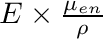 values for the medium of interest. This allows for a faster evaluation of the summation over all contributing particles by saving the multiplication operation. The name of this file must be provided using the
and 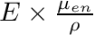 values for the medium of interest. This allows for a faster evaluation of the summation over all contributing particles by saving the multiplication operation. The name of this file must be provided using the emuen file key as shown in the above example. For interactive runs this name can be either relative or absolute. However, when submitting parallel jobs to a cluster absolute names should be used. The name of this file can contain an environment variable. For instance it might be useful to use $EGS_HOME or $HEN_HOUSE to share the same input file among different EGSnrc users.
Collision kerma for medium m, , is computed by summing up the individual contributions of N photons crossing the scoring volume 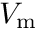 using the expression
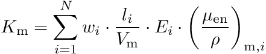
with  the path crossed by the photon of statistical weight
the path crossed by the photon of statistical weight  through the scoring region.
through the scoring region.
The example file emuen_rho_air_1keV-1.5MeV.data contains values for air on a logarithmic energy scale from 1 keV up to 1.5 MeV. These values were calculated with the g application using the following (non-default) transport parameters:
############################## :start mc transport parameter: Global ECUT = 0.512 Global PCUT = 0.001 Photon cross sections = mcdf-xcom # XCOM with renormalized PE xsections Pair cross sections = nrc Triplet production = On Radiative Compton corrections = On Brems cross sections = nrc Electron Impact Ionization = penelope # Could be also ik :stop mc transport parameter: ##############################
This file is distributed with egs_kerma in the same folder.
- Note
- If mass-energy transfer coefficients are provided instead, the quantity estimated is the total kerma.
Variance reduction: Forced Detection
If the user provides an FD geometry, the VRT known as forced detection can be used which can increase the calculation efficiency over a linear TL estimation. This algorithm combines an exponential track-length (eTL) estimator with a geometry-guided ray-tracing algorithm. The main efficiency gain stems from the fact that photons contribute to the scoring without having to reach the scoring volume. Dramatic efficiency increases can be obtained when there is significant attenuation of the photon beam or a large number of boundaries in an inhomogeneous geometry, e.g., kV imaging, shielding calculations, etc.
The usual approach to compute kerma for medium m is to score the individual contributions from photons crossing the scoring region. This approach is already several times more efficient than using the kerma approximation where a full simulation of all photon interactions is performed assuming electrons deposit their energy on the spot. One can go one step further and estimate the contribution to kerma from any photon that could potentially cross the scoring region due to its direction. An algorithm to determine whether the direction of the photon intercepts with the scoring region needs to be implemented, as well as a ray-tracing algorithm to account for the attenuation through the geometry. This way, one does not have to wait until the photon reaches the scoring region and a more efficient sampling of all possible contributions is achieved. This approach is equivalent to running N separate MC simulations where in the 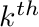 simulation, only the contribution to the kerma from particles interacting times is scored. After running all these simulations, they can be added together to obtain total kerma.
Kerma to medium m in a scoring region is computed by adding up the contribution from photons crossing it using the expression
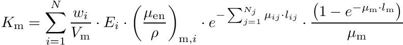
with 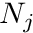 the number of regions crossed by the photon to reach the scoring region,  the attenuation coefficient in region
the attenuation coefficient in region  , the path across region ,
, the path across region ,  the attenuation coefficient in the scoring region and 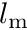 the path across the scoring region.
the attenuation coefficient in the scoring region and 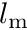 the path across the scoring region.
The name of an FD geometry should be provided to the application via the key Default FD geometry anywhere in the scoring options input block or using the FD geometry key in the input block for a specific calculation geometry. If the shape of the scoring volume is such that photons intercepting it can reenter it, after exiting, an arbitrary number of times, the algorithm invokes the scoring routine recursively keeping track of the photon attenuation. Examples of such geometries are spherical and cylindrical shells.
BEWARE: If the FD geometry is not judiciously chosen, time will be wasted ray-tracing photons without actually scoring.
Fluence scoring
The fluence scoring input block can be used to request the photon fluence spectrum in a volume of medium m defined by the scoring regions. No scoring in individual scoring regions is currently implemented.
A photon fluence calculation can be requested using the following input block:
:start scoring options:
...
:start fluence scoring:
minimum energy = Emin
maximum energy = Emax
number of bins = N
scale = linear, logarithmic
:stop fluence scoring:
:stop scoring options:
Differential fluence 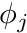 is calculated by scoring the volume-averaged track length for particles with energies E between 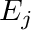 and 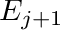 using Chilton's fluence concept for any sampling volume :
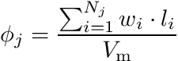
where  is the length of the 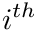 particle track in the scoring volume. The width of the energy bins is defined by 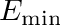, and the number of bins
is the length of the 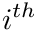 particle track in the scoring volume. The width of the energy bins is defined by 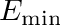, and the number of bins  . Total fluence 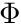 is calculated as the sum over all contributions to the fluence
. Total fluence 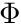 is calculated as the sum over all contributions to the fluence
![\[ \Phi=\sum_{j=0}^{N-1} \phi_j \]](form_40.png)
Output
Kerma to medium m in the volume of interest and individual scoring regions (if requested) for each geometry as well as kerma ratios of correlated geometries requested by the user are output to an *.egslog file (batch execution) or to the screen (interactive execution). If a fluence calculation is requested, total and differential photon fluences are also output for each calculation geometry. Additionally, a Grace plot of the differential fluence for all geometries is generated in a file with extension *.agr.
Usage
As any other EGSnrc application, egs_kerma can be started from the command line using
egs_kerma -i input_file [-p pegs_file] [-o output_file] [-b] [-s] [-P N -j i]
where the arguments in square brackets are optional. With the -o option one can change the name of the output files (by default input_file.xxx is used, where xxx is .egslog for the log file, .egsdat for the data file, etc.). With -b one specifies a "batch" run, i.e. the output is redirected to output_file.egslog. With -s one can force egs_kerma to use a simple RCO instead of a JCF-RCO in parallel runs specified with -P N -j i, where N is the number of parallel jobs and i the job index. Note that on Unix-type systems it is easier to use the exb command to submit parallel jobs
exb egs_kerma input_file pegs_file [p=N] [batch=pbs]
where the batch option specifies the queuing system to be used. If using a pegsless input file, then pegs_file must be substituted with the keyword pegsless. The EGSnrc GUI can be also used, see see PIRS-877 for more details on running EGSnrc applications.
TODO
- Individual or group entry of scoring regions
- Do not require the entry of masses. The base geometry defaults to unity mass for those geometries that have no mass calculation implementation. Change the default and have the base geometry return the medium's density instead. At least results would be density scaled.
- Fluence calculation for individual scoring regions
-
Allow kerma estimation in entire geometry if no scoring regions specified
- Default mass set to 1 or 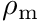
- One entry for mass taken as same mass for all regions
- Individual or group entry of masses
- Allow different materials in the scoring volume by providing mass-energy absorption or transfer coefficients for all materials in the scoring volume. Alternatively, one could compute mass-energy transfer coefficients on-the-fly (total kerma).
Input examples
Depth dose in 15 cm water sphere for 5 keV photons
###############################################################################
#
# A simple example input file for the egs_kerma C++ application.
#
# Simulates a point source at the origin of a 15 cm radius water sphere emitting
# 5 keV photons isotropically. Depth dose in 1 mm thick spherical shells is
# calculated using a forced-detection (FD) technique (exponential track-length).
#
# This technique allows estimating kerma 20 times more efficiently than linear
# track-length (TL) estimation within the inner most sphere. The efficiency gain
# increases exponentially at larger depths in the phantom. This can be tested
# by commenting out the FD geometry input below to turn off FD.
#
# The dramatic FD efficiency gains at 5 keV are not observed at 25 keV. As a matter
# of fact TL estimation is more efficient than FD below 1 cm increasing past
# that depth to only a 20% efficiency gain at 2 cm. This is related with the
# fact that in a spherical concentric geometry, photons are always directed to
# the FD geometry and ray-tracing is done all the time.
#
# NOTE : Material data is generated on-the-fly (pegsless). If source energy
# changed, make sure to adjust energy cut-offs (ae, ue, ap, up) below.
#
###############################################################################
###############################################################################
### Geometry
###############################################################################
:start geometry definition:
### water sphere, 15 cm radius
:start geometry:
name = the_phantom
library = egs_spheres
midpoint = 0 0 0
radii = 0.1 0.2 0.3 0.4 0.5 0.6 0.7 0.8 0.9 1.0 1.1 1.2 1.3 1.4 1.5 1.6 1.7 1.8 1.9 2.0 15
:start media input:
media = water
:stop media input:
:stop geometry:
:start geometry:
name = fd_g
library = egs_spheres
midpoint = 0 0 0
radii = 2.0
:start media input:
media = water
:stop media input:
:stop geometry:
### simulation geometry
simulation geometry = the_phantom
:stop geometry definition:
###############################################################################
### Media
###############################################################################
:start media definition:
### energy cutoffs
ae = 0.512
ue = 0.542
ap = 0.001
up = 0.030
### concrete
:start water:
density correction file = water_icru90
:stop water:
:stop media definition:
:start rng definition:
type = ranmar
initial seeds = 7 12
high resolution = yes
:stop rng definition:
###############################################################################
### Source
###############################################################################
:start source definition:
### isotropic
:start source:
name = isotropic
library = egs_isotropic_source
charge = 0
### source shape
:start shape:
type = point
position = 0, 0, 0
:stop shape:
### source spectrum
:start spectrum:
type = monoenergetic
energy = 0.005 # MeV
:stop spectrum:
:stop source:
### simulation source
simulation source = isotropic
:stop source definition:
###############################################################################
### Scoring options
###############################################################################
:start scoring options:
### use the same geometry under two different names, for easier bookeeping
:start calculation geometry:
geometry name = the_phantom
scoring regions = 0 1 2 3 4 5 6 7 8 9 10 11 12 13 14 15 16 17 18 19
scoring region masses = 0.0041804126 0.029263 0.079428 0.154675 0.255005 0.380418 0.530912 \
0.70649 0.90715 1.132892 1.383717 1.659624 1.960614 2.286686 \
2.63784 3.014078 3.415397 3.841799 4.293284 4.769851
FD geometry = fd_g
:stop calculation geometry:
### E*muen file (could also be E*mutr): absolute or relative file path
emuen file = $EGS_HOME/egs_kerma/emuen_rho_water_1keV-1.5MeV.data
:stop scoring options:
###############################################################################
### Transport parameters
###############################################################################
:start MC transport parameter:
### you can include here any of the EGSnrc transport parameters
Global ECUT = 2000. # Turn-off electron transport
Photon cross sections = mcdf-xcom # XCOM with renormalized PE xsections
:stop MC transport parameter:
###############################################################################
### Run control
###############################################################################
:start run control:
ncase = 4e+6
:stop run control:
Fluence outside Pb shield for 20 MeV electrons
###############################################################################
#
# A simple example input file for the egs_kerma C++ application.
#
# Simulates a 20 MeV isotropic electron source inside a very thick lead sphere.
# Kerma and photon fluence outside the lead sphere are calculated using a
# forced-detection (FD) technique (exponential track-length estimator). This
# technique is more efficient than linear track-length (TL) estimation.
# Efficiency is further increased by using a 10 keV e- transport cut-off
# (ECUT=0.521 MeV), and a simpler e- transport algorithm.
#
# Due to the thick lead shielding this simulation will require significant CPU
# time to provide statistically meaninful results. The current number of histories
# takes about 1 min on a single core of an Intel i7-2640M CPU @ 2.8 GHz and about
# 40 s on all four cores. To submit to all available cores on a single computer
# use the egs-parallel script (available on request).
#
# Provides a solution to problem 2.3.4 from the EGSnrc course.
#
# NOTE : Material data is generated on-the-fly (pegsless). If source energy
# changed, make sure to adjust energy cut-offs (ae, ue, ap, up) below.
#
###############################################################################
###############################################################################
### Geometry
###############################################################################
:start geometry definition:
### lead sphere, 18 cm radius (~ 22 RCSDA for 20 MeV e-)
:start geometry:
name = shield
library = egs_spheres
midpoint = 0 0 0
radii = 18.0 18.1
:start media input:
media = lead, air
set medium = 1 1
:stop media input:
:stop geometry:
### simulation geometry
simulation geometry = shield
:stop geometry definition:
############################################
### Media definition (pegsless mode)
############################################
:start media definition:
### energy cutoffs
ae = 0.521
ue = 20.512
ap = 0.001
up = 20.000
### air
:start air:
density correction file = air_dry_nearsealevel
:stop air:
### concrete
:start lead:
density correction file = lead
:stop lead:
:stop media definition:
#########################################
### 20 MeV isotropic point source
#########################################
:start source definition:
### isotropic
:start source:
name = isotropic
library = egs_isotropic_source
charge = -1
### source shape
:start shape:
type = point
position = 0, 0, 0
:stop shape:
### source spectrum
:start spectrum:
type = monoenergetic
energy = 20.0 # MeV
:stop spectrum:
:stop source:
### simulation source
simulation source = isotropic
:stop source definition:
###############################################################################
### Scoring options
###############################################################################
:start scoring options:
### Scoring geometry
:start calculation geometry:
geometry name = shield
scoring regions = 1 # outer air shell
scoring region masses = 0.49326 # mass in g for each region
:stop calculation geometry:
### fluence scoring requested (common to all calculation geometries)
:start fluence scoring:
minimum energy = 0.00
maximum energy = 20.0
number of bins = 200
scale = linear
:stop fluence scoring:
### E*muen file (could also be E*mutr): absolute or relative file path
emuen file = $EGS_HOME/egs_kerma/emuen_rho_air_1keV-20MeV.data
### geometry for forced-detection (if omitted, score ONLY when reaching scoring region)
Default FD geometry = shield
:stop scoring options:
###############################################################################
### Transport parameters
###############################################################################
:start MC transport parameter:
### you can include here any of the EGSnrc transport parameters
####################
# Photon parameters
####################
Global PCUT = 0.001 # Full transport
Photon cross sections = mcdf-xcom # Used for E*muen/rho calculations with g app
######################
# Electron parameters
######################
# Using a less accurate e- transport and boundary crossing algorithm (PRESTA-I)
# to speed things up (2X). Since transport occurs in a homogeneous lead phantom
# the details of the e- transport algorithm are not as important, hence this
# approximation produces the same results as a more accurate approach (PRESTA-II).
################
Global ECUT = 0.521 # negligible approximation
Boundary crossing algorithm = PRESTA-I # Speed up calculation
Electron-step algorithm = PRESTA-I # Speed up calculation
:stop MC transport parameter:
###############################################################################
### Run control
###############################################################################
:start run control:
ncase = 1e4
:stop run control:
Kerma in 5 cm air sphere for 40 keV photons
###############################################################################
#
# A simple example input file for the egs_kerma C++ application.
#
# Simulates a 40 keV isotropic photon source in a room with concrete walls
# irradiating an air sphere placed in the centre of the room at 1 m from the
# source. Kerma and fluence inside the 5 cm radius air sphere are calculated
# using a forced-detection (FD) technique (exponential track-length estimator).
# This should be about 80% more efficient than a linear track-length estimation.
# The latter can be invoked by commenting out the input key "Default FD geometry"
#
# The effect of scatter off the concrete walls on the air sphere is estimated by
# computing the ratio of the total kerma to the kerma from a calculation excluding
# particles touching exclusion regions (the wall in this case).
#
# NOTE 1: Material data is generated on-the-fly (pegsless). If source energy
# changed, make sure to adjust energy cut-offs (ae, ue, ap, up) below.
#
# NOTE 2: Although one geometry would be enough, two geometries are used for
# illustration purposes (see comments below for more details).
#
###############################################################################
###############################################################################
### Geometry
###############################################################################
:start geometry definition:
### air sphere, spherical, 5 cm radius
:start geometry:
name = sphere
library = egs_spheres
midpoint = 0 0 0
radii = 5.0
:start media input:
media = air
:stop media input:
:stop geometry:
### air box (8 m x 8 m x 8 m)
:start geometry:
name = air
library = egs_box
box size = 800
:start media input:
media = air
:stop media input:
:stop geometry:
### room with 1 m thick concrete walls
:start geometry:
name = walls
library = egs_box
box size = 900
:start media input:
media = concrete
:stop media input:
:stop geometry:
### room with concrete walls
:start geometry:
name = room
library = egs_genvelope
base geometry = walls
inscribed geometries = air
:stop geometry:
###########################################################################
#
# The two geometries below are identical
#
# The purpose is to account for wall contributions to the air sphere. The
# first geometry does NOT include contributions from the wall during the
# calculation, while the second one does. See the 'scoring options' block
# for more detail.
#
# There are several ways of accomplishing this. One could just have used
# the same geometry for both calculations, with and without the sensitive
# regions, or have one geometry with and another without the walls.
#
###########################################################################
### air sphere in room with concrete walls (wall contribution NOT included)
:start geometry:
name = sphere_in_room_no_wall
library = egs_genvelope
base geometry = room
inscribed geometries = sphere
:stop geometry:
### air sphere in room with concrete walls (wall contribution included)
:start geometry:
name = sphere_in_room_all
library = egs_genvelope
base geometry = room
inscribed geometries = sphere
:stop geometry:
### simulation geometry
simulation geometry = sphere_in_room_no_wall
:stop geometry definition:
############################################
### Media definition (pegsless mode)
############################################
:start media definition:
### energy cutoffs
ae = 0.512
ue = 0.555
ap = 0.001
up = 0.045
### air
:start air:
density correction file = air_dry_nearsealevel
:stop air:
### concrete
:start concrete:
density correction file = concrete_ordinary
:stop concrete:
:stop media definition:
#########################################
### 40 keV isotropic point source
#########################################
:start source definition:
### isotropic
:start source:
name = isotropic
library = egs_isotropic_source
charge = 0
### source shape
:start shape:
type = point
position = 0, 0, -100
:stop shape:
### source spectrum
:start spectrum:
type = monoenergetic
energy = 0.04 # MeV
:stop spectrum:
:stop source:
### simulation source
simulation source = isotropic
:stop source definition:
###############################################################################
### Scoring options
###############################################################################
:start scoring options:
### use the same geometry under two different names, for easier bookeeping
:start calculation geometry:
geometry name = sphere_in_room_no_wall
scoring regions = 2
excluded regions = 0 # exclude contribution from these regions
scoring region masses = 0.631 # mass in g for each scoring region
#scoring volume mass = 0.631 # alternatively: mass for whole scoring volume
:stop calculation geometry:
:start calculation geometry:
geometry name = sphere_in_room_all
scoring regions = 2
scoring region masses = 0.631 # mass in g for each region
#scoring volume mass = 0.631 # mass in g for whole scoring volume
:stop calculation geometry:
### ratio estimates wall contribution to air sphere
correlated geometries = sphere_in_room_all sphere_in_room_no_wall
### fluence scoring requested (common to all calculation geometries)
:start fluence scoring:
minimum energy = 0.001
maximum energy = 0.040
number of bins = 40
scale = linear
:stop fluence scoring:
### E*muen file (could also be E*mutr): absolute or relative file path
#emuen file = emuen_icru90_1.5MeV.data
### Use absolute path when submitting parallel jobs!!!
### $EGS_HOME replaced with its value now
emuen file = $EGS_HOME/egs_kerma/emuen_rho_air_1keV-1.5MeV.data
### geometry for forced-detection (if omitted, score ONLY when reaching scoring region)
Default FD geometry = sphere
:stop scoring options:
###############################################################################
### Transport parameters
###############################################################################
:start MC transport parameter:
### you can include here any of the EGSnrc transport parameters
Global ECUT = 2.511 # Turn-off electron transport
Photon cross sections = mcdf-xcom # MCDF-XCOM photon xsections since
# used for E*muen values above
:stop MC transport parameter:
###############################################################################
### Run control
###############################################################################
:start run control:
ncase = 4e6
:stop run control: